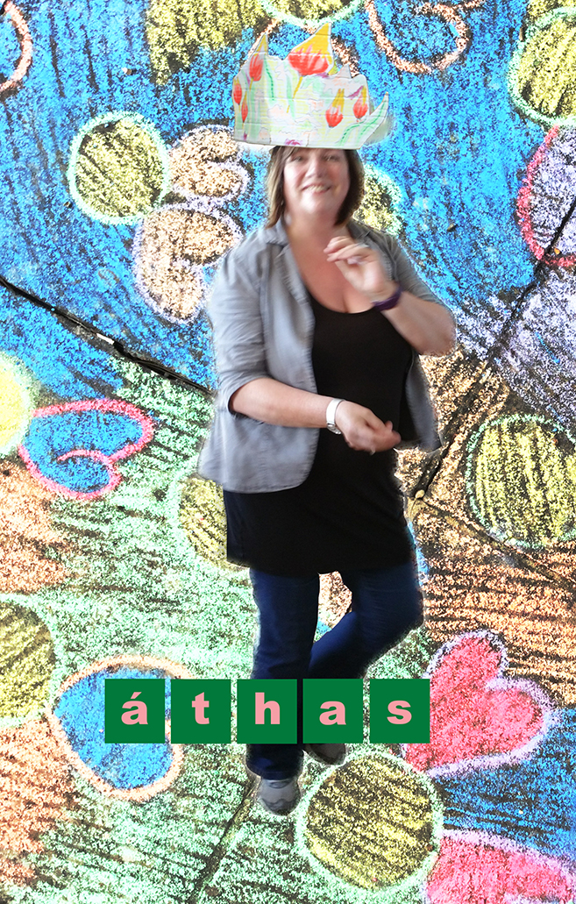

home | about | the work | the writing | curation | teaching | contact | links
Current work > ART-PLOT | ÁTHAS |

In 1917, Franz Kafka wrote in The Silence of the Sirens:
'Now the Sirens have a still more fatal weapon than their song, namely their silence. And though admittedly such a thing never happened, it is still conceivable that someone might possibly have escaped from their singing; but from their silence certainly never.'
Developing themes and the performance persona she has worked in PLAY IN / PLAY OUT, Clare is exploring further the possibilities of reaching new audiences through making unmediated performance works in rural locations that are perhaps less used to seeing performance art.
She is developing a series of solo performance works, ÁTHAS, meaning joy in Irish Gaelic, to be performed in rural towns and villages, in the street, square or the field. Using repetitious action, song, pastiche, comedy and pathos; these works will be unannounced, fleeting but captivating to those who encounter them.
Intended to attract and hold attention they will employ an aural and visual language borrowed from sources as diverse as the diva, comic female super heroes, Vera Lynn and 1970's pop girl bands in order to rework the myth of the Siren, the predatory and deceptive female who lured sailors to their deaths with their songs and their silence. Instead she represents a vocal, colourful and mature version of the attracting female that reaches out through the warmth of her persona to employ humour and surprise and invites connection with an audience, a meeting of creative spontaneity that is joyful, of the moment and of the place.
The work will knowingly blend culturally embedded versions of the siren female with the persona of the mature woman and relocate them in the public rural space.